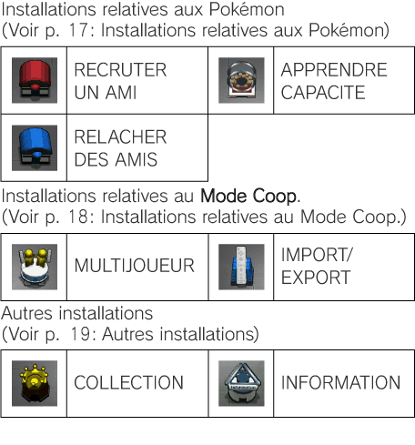

12 |
Le Terminal |
 |
|
L’écran du Terminal Permet de voir la carte du Terminal ou le nombre de Options de jeu dans le Terminal Dans le Terminal, vous pouvez utiliser les Tremplins pour atteindre les Stages, tenter votre chance à la Bataille Royale, ou encore utiliser l’une des nombreuses installations.
Les Stages Chaque Ligue compte 6 Stages. Les Tremplins pour les atteindre se trouvent dans le Terminal. En vous approchant du Tremplin d’un Stage que vous avez déjà fini, vous pouvez voir le nombre de fois que vous l’avez fini, les Pokémon que vous y avez rencontrés ou encore ceux qui sont devenus vos amis. Les Pokémon qui ne sont pas encore devenus vos amis apparaissent en noir et blanc, et ceux que vous n’avez jamais rencontrés sont remplacés par l’icône Tenter sa chance à la Bataille Royale Pour tenter votre chance à la Bataille Royale, vous devez avoir recruté un Pokémon d’une Puissance supérieure à un certain niveau (voir p. 11: Lire l'écran d'information des Pokémon). Si vous y parvenez, la porte s’ouvrira, vous donnant accès au Tremplin de la Bataille Royale au fond du hall. Pour vérifier la Puissance nécessaire pour avoir le droit de tenter sa chance à la Bataille Royale, approchez-vous de la porte. Utiliser les installations Chaque installation a une fonction spécifique dans le jeu, comme recruter un Pokémon ou encore apprendre une capacité. Pour utiliser une installation, approchez-vous-en et appuyez sur

Changer de Pokémon Pour changer de Pokémon, appuyez sur |
 .
.
 pour afficher le Menu de Changement (voir p. 11: Menu de Changement).
pour afficher le Menu de Changement (voir p. 11: Menu de Changement).
 |
 |
 |